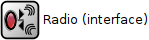
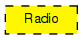

Prototype for radio modules. Radio modules deal with the transmission of frames over a wireless medium (the radio channel).
Transmission
Upper layers (wireless L2 protocols) can send frames to the radio module. Frames will be encapsulated into AirFrame messages and distributed to other network nodes within interference distance. The AirFrame represents the signal in the radio channel, and its fields hold properties of the transmission like the transmit power.
The global ChannelControl module keeps track of node positions, and knows which nodes are within interference distance of others (neighbour list). When transmitting, the radio module obtains the neighbour list, and sends a copy of the AirFrame to each neighbour.
Reception
Received AirFrame messages get delivered to the radioIn gate of the module. If it was found to have been received correctly, it gets decapsulated and the frame sent to the upper layer.
Note: currently the packet is also sent up if it was NOT received incorrectly, with its message kind set to COLLISION or BITERROR. This may change in the future, as erroneous receptions could also be signalled via the NotificationBoard.
Determining whether the frame was received correctly is a complicated process. The AbstractRadio C++ class from which the Ieee80211Radio and GenericRadio are derived, basically first calculates the received power of the frame, taking a path loss model into account. Then it calculates the signal-noise ratio, thermal noise and other frames being counted as noise. It is determined from the SNR whether the packet was received correctly, taking modulation scheme and possible forward error correction into account. For details please see the C++ code and its documentation.
Monitoring the radio state
Wireless L2 protocols and other modules within the node can monitor
radio transmissions and receptions by subscribing to the
NF_RADIOSTATE_CHANGED category at the NotificationBoard
module of the node.
Dynamically configuring the radio
The bitrate and the receive/transmit channel can be changed by sending Radio a blank cMessage with PHY_C_CONFIGURERADIO as message kind, and a PhyControlInfo object attached to it as control info, to hold the new bitrate and/or channel number. If the radio is currently transmitting, the change will actually take place after the transmission is completed.
It is also possible to specify a different bitrate for individual frames; to do that, attach a PhyControlInfo with bitrate filled in to the frame.
The following diagram shows usage relationships between types. Unresolved types are missing from the diagram.
The following diagram shows inheritance relationships for this type. Unresolved types are missing from the diagram.

| Name | Value | Description |
|---|---|---|
| display | i=block/wrxtx |
// // Prototype for radio modules. Radio modules deal with the transmission // of frames over a wireless medium (the radio channel). // // <b>Transmission</b> // // Upper layers (wireless L2 protocols) can send frames to the radio // module. Frames will be encapsulated into AirFrame messages and // distributed to other network nodes within interference distance. // The AirFrame represents the signal in the radio channel, and // its fields hold properties of the transmission like the transmit power. // // The global ChannelControl module keeps track of node positions, // and knows which nodes are within interference distance of others // (neighbour list). When transmitting, the radio module obtains the // neighbour list, and sends a copy of the AirFrame to each neighbour. // // // <b>Reception</b> // // Received AirFrame messages get delivered to the radioIn gate of the // module. If it was found to have been received correctly, it gets // decapsulated and the frame sent to the upper layer. // // Note: currently the packet is also sent up if it was NOT received // incorrectly, with its message kind set to COLLISION or BITERROR. // This may change in the future, as erroneous receptions could also // be signalled via the NotificationBoard. // // Determining whether the frame was received correctly is a complicated // process. The AbstractRadio C++ class from which the Ieee80211Radio // and GenericRadio are derived, basically first calculates the received // power of the frame, taking a path loss model into account. // Then it calculates the signal-noise ratio, thermal noise and other // frames being counted as noise. It is determined from the SNR // whether the packet was received correctly, taking modulation // scheme and possible forward error correction into account. // For details please see the C++ code and its documentation. // // // <b>Monitoring the radio state</b> // // Wireless L2 protocols and other modules within the node can monitor // radio transmissions and receptions by subscribing to the // <code>NF_RADIOSTATE_CHANGED</code> category at the NotificationBoard // module of the node. // // // <b>Dynamically configuring the radio</b> // // The bitrate and the receive/transmit channel can be changed by sending // Radio a blank cMessage with <tt>PHY_C_CONFIGURERADIO</tt> as message kind, and // a PhyControlInfo object attached to it as control info, to hold the // new bitrate and/or channel number. If the radio is currently transmitting, // the change will actually take place after the transmission is completed. // // It is also possible to specify a different bitrate for individual frames; // to do that, attach a PhyControlInfo with bitrate filled in to the frame. // moduleinterface Radio { parameters: @display("i=block/wrxtx"); gates: input uppergateIn @labels(PhyControlInfo/down); // from higher layer protocol (MAC) output uppergateOut @labels(PhyControlInfo/up); // to higher layer protocol (MAC) input radioIn @labels(AirFrame); // to receive frames (AirFrame) on the radio channel }